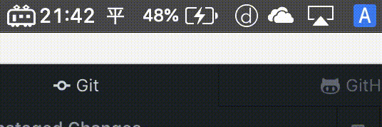
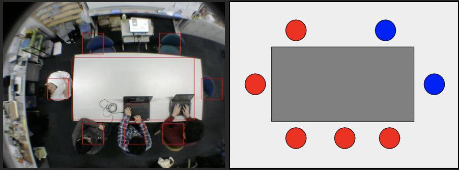
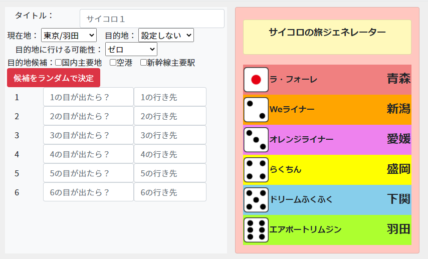

ひー
(@pyu666)
物心がついたころからPCに触り，大学生でプログラミングを始める． 今はJavaやPythonでのアプリケーション開発やArduino，RaspberryPiを利用したIoT機器の制作等をしている． ものづくり，ものさわりが好きな人．DIYとかもやる人．
Account
Product
ツギトレ！
macのメニューバーに次の列車の時刻を表示するアプリケーション．また，運行情報も同時に確認可能．
大学から帰るときにあると便利だと思い開発．
個人開発，Webスクレイピングでデータ取得．

空席情報表示システム
ファストフード店などの座席が空席か検知し、空き状況を表示するシステム．
動体検知を利用し，自動的に席が空いているかどうかを検出します．
プロトタイプ・大学の基礎研究での開発．
チーム内ではチームリーダーとしてプロジェクトを牽引すると同時にコーディングも積極的に行った．

ARプログラミングロボット
ARマーカーを利用してプログラミングができるロボット．
マーカーそれぞれにコマンドを書き込むことで，並び替えて自由にロボットを動かすことができる．
画像が散らかっているのは再撮影ができなくなってしまったため...
サイコロの旅ジェネレータ
水曜どうでしょうの企画「サイコロの旅」をイメージしたジェネレーター。
１～６の目に行先と内容を記入することで、右側のボードに反映される。
また、自動で行先候補地を決めることも可能で、候補地が決まったら画像保存やツイートも可能。

実験用エディタ
卒業研究で使用するために開発。通常のエディタの機能に加え
・入力内容の記録
・コンパイルエラー検出機能
が搭載。
プログラミング初心者がどのタイミングで躓くかを把握し、研究に役立てた。